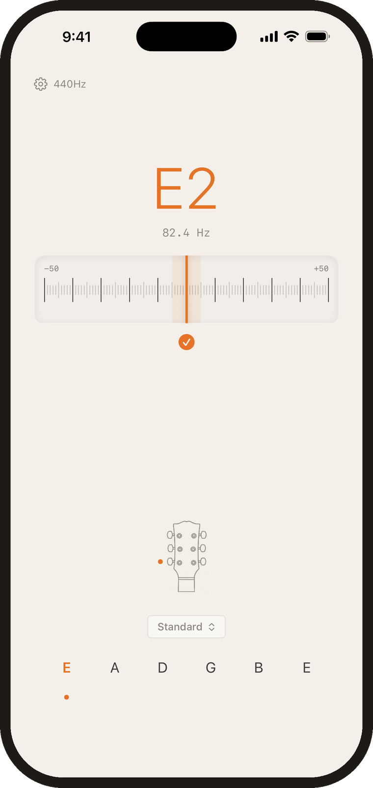

Electric · 6 in line
Acoustic · 3 + 3
6th
D2
73.4 Hz
5th
A2
110.0 Hz
4th
D3
146.8 Hz
3rd
F♯3
185.0 Hz
2nd
A3
220.0 Hz
1st
D4
293.7 Hz
Note names won’t tune your guitar.
Knowing the strings should read D A D F♯ A D is the easy half. Landing each frequency — and knowing whether you are nine cents flat or three — is the half that needs an ear or an instrument.
1
Open Dial and play a string
It listens as soon as you play. Nothing to press.
2
Turn each peg until the needle centres
Four strings move: both Es drop to D, the G drops to F sharp, and the B drops to A.
3
Check the remaining strings
Changing tension on one string shifts the neck slightly. The rest usually need a nudge.
Get Dial for iPhone
Standard tuning free
Alternate tunings, one-time unlock
Alternate tunings, one-time unlock

What Open D is for
The other great slide tuning, and a favourite for fingerstyle — Joni Mitchell built dozens of variants around it. The open chord rings deep, and simple shapes above it stay musical.
A few chords to try
D
Open
G
Barre 5th
A
Barre 7th